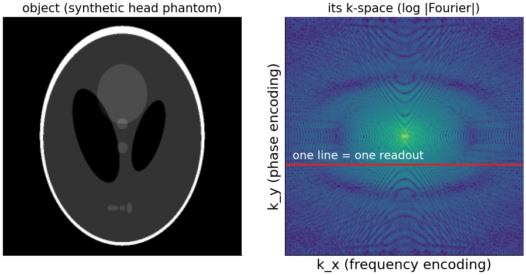
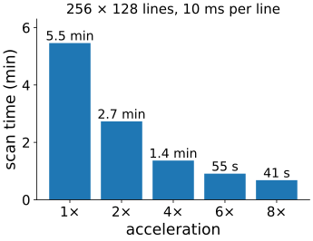
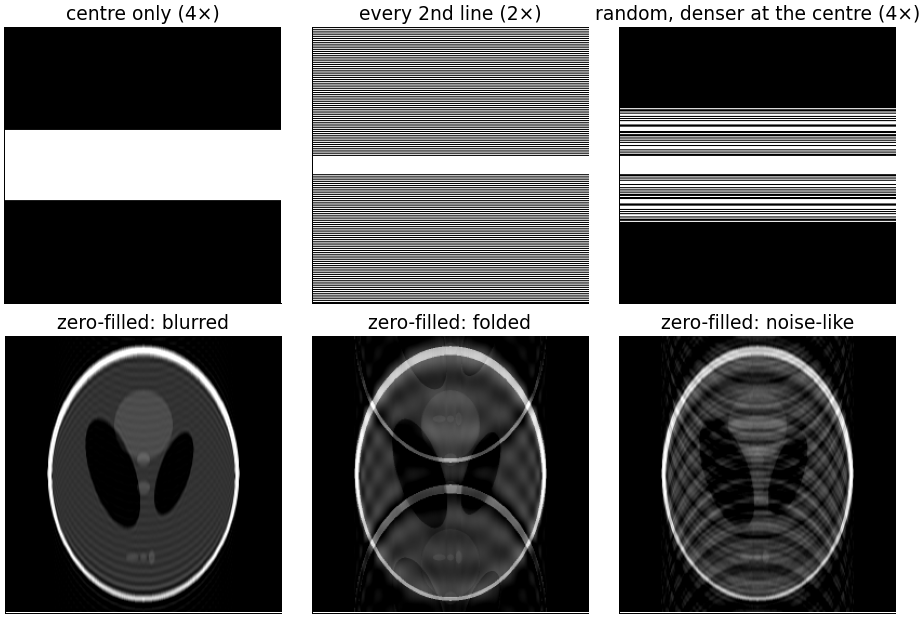
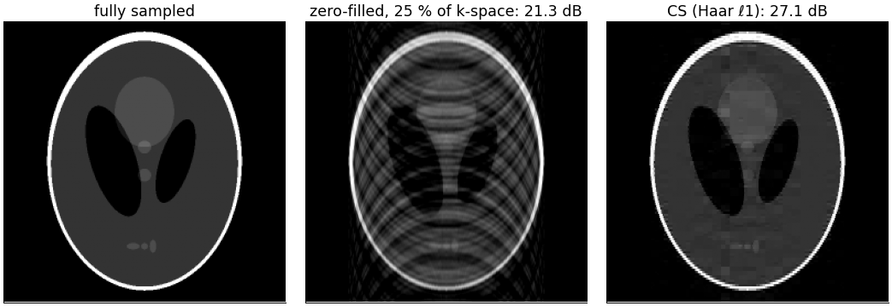
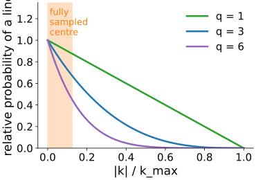
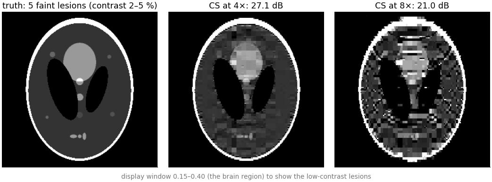

Magnetic resonance imaging is the flagship application of compressed sensing: the scanner measures Fourier coefficients, measuring them takes time, and we choose which ones to measure.
What the scanner measures (k-space), and why scan time grows with the number of lines.
Three ways to skip lines: the centre (blur), every other line (fold-over), random lines denser at the centre (noise-like artefacts).
The reconstruction: data consistency on the measured lines, wavelet sparsity elsewhere.
What can go wrong: small faint details are removed; too much acceleration fails abruptly.
Slides titled The math give the formulas and proofs; the ideas are complete without them.
Magnetic field gradients make the signal of each position oscillate at a frequency that depends on where it is.
The received signal at one moment is therefore one Fourier coefficient of the object.
The scanner fills k-space (the 2D spectrum) one line at a time; the image is the inverse 2D DFT (recall the Fourier unit).
Most of the energy sits near the centre of k-space (the slow variations); edges and fine detail live further out.

Time = lines
Within one line (one readout) the samples come fast. Each new line needs a new excitation: a fixed repetition time per line.
A 3D scan with 256 × 128 phase-encoding lines at 10 ms per line: 256 \cdot 128 \cdot 0.01\,\text{s} = 328\,\text{s} = 5.5 min.
Patients move, children cannot lie still, the heart beats, contrast agents wash out. Fewer lines = shorter scans.
4× fewer lines: 82 s. But which lines may we skip?

Three ways to skip lines

Centre only: a low-pass filter. The image is blurred with ringing (recall the Fourier unit). No reconstruction can bring the edges back: they were never measured.
Every second line: the image folds: a ghost copy shifted by half the field of view (aliasing, as in the 1D copies of the last unit).
Random lines, denser at the centre: noise-like artefacts, which a sparsity prior can remove.
Only option 3 fits compressed sensing.
The math: k-space sampling and the PSF of a mask
Measurements: \mathbf y = PF\mathbf x + \mathbf n, with F the orthonormal 2D DFT and P the rows (k-space samples) kept.
Zero-filled image: F^{-1}P^\top\mathbf y = \mathbf x * \mathrm{psf} (noise aside), where \mathrm{psf} = F^{-1}(\text{mask}) (unit 3).
A mask that keeps every r-th line in k_y: in y the PSF is r equal spikes N/r apart, so the image is the average of r copies shifted by FOV/r (field of view). For r = 2: one ghost at half the FOV.
Centre only (|k_y| < c/2): the PSF is a sinc-like (Dirichlet) kernel of width about N/c along y: blur plus ringing.
Random lines: a central peak plus low, irregular sidelobes along y.
The reconstruction

FISTA with the partial-Fourier forward operator and Haar-wavelet ℓ1 from 25 % of the lines: 21.3 → 27.1 dB. The measured lines are kept consistent with the data; the prior fills the rest with the sparsest image in wavelets.
The math: the CS-MRI problem
\min_{\mathbf x}\ \tfrac12\|PF\mathbf x - \mathbf y\|^2 + λ_1\|W\mathbf x\|_1 + λ_2\,\mathrm{TV}(\mathbf x) (Lustig, Donoho & Pauly 2007), with W an orthonormal wavelet transform.
PF has orthonormal rows (PFF^{-1}P^\top = I), so \|PF\| = 1, L = 1 and the ISTA step τ = 1 is safe.
One FISTA step: one FFT and one inverse FFT (the gradient step \mathbf x + F^{-1}P^\top(\mathbf y - PF\mathbf x): replace the measured k-space lines by the data), then the proximal step: a wavelet transform pair with soft thresholding; with TV as well, a few TV-denoising iterations (applying the two proximal steps one after the other is an approximation).
Real scanners use several receiver coils: \mathbf y_c = PFS_c\mathbf x with coil sensitivities S_c; the same algorithm with a larger operator.
Try it: compressed-sensing MRI
The math: variable density
Lines are drawn at random with probability p(k) \propto \left(1 - \frac{|k|}{k_{\max}}\right)^q, plus a fully sampled centre (here N/16 lines).
Why denser at the centre: the energy is there (77 % of the phantom’s energy within the central 17 of 256 lines), and coarse wavelets are coherent with low frequencies: a coarse wavelet is concentrated at low |k|, so random sampling there would miss most of its information.
Fine wavelets are spread over high frequencies, where sparse random sampling is enough.
Larger q: more concentrated at the centre (sharper drop).

In practice
Compressed-sensing acceleration of about 2–8× is used clinically (commercial implementations since about 2017), mostly combined with parallel imaging: several receiver coils, each seeing the object through its own sensitivity profile, which adds equations.
Radial and spiral trajectories: radial lines through the centre of k-space are projections of the object (the Fourier slice theorem of back-projection); undersampled radial data give streaks, which are also incoherent.
Dynamic MRI (the beating heart, contrast uptake): successive frames differ little, so the series is very sparse in time; accelerations of 10× and more.
The reconstruction takes seconds to minutes per scan: computation replaces scan time.
What can go wrong

Small, low-contrast lesions vanish, already at 4× here, although the PSNR is good: the ℓ1 shrinkage of the sparsity unit removes small coefficients, and a faint 3-pixel lesion has only small coefficients.
TV makes a cartoon; Haar makes blocks.
Too much acceleration fails abruptly (the phase transition): at 8× the reconstruction breaks down.
Unlike a learned prior, a sparsity prior does not invent plausible anatomy; but it can remove real detail without any visible sign.
Learned reconstruction
Unrolling: write a fixed number of ISTA iterations as layers, and learn the thresholds and filters (or replace the threshold by a small network) from pairs of undersampled and fully sampled scans: “learned ISTA” (Gregor & LeCun 2010; for MRI, variational networks). Recall convolutional networks.
Diffusion priors for the same inverse problem: sample images that are consistent with the measured k-space lines and look like the training data (diffusion priors).
Faster and often better than hand-made sparsity, but a learned prior can hallucinate plausible structures that were not in the patient; a hand-made one mostly removes detail. Both need validation against fully sampled scans.
Summary
The MRI scanner measures Fourier coefficients, line by line; scan time is proportional to the number of lines.
Skipping lines: centre only blurs, regular undersampling folds (ghosts at FOV/r), random, variable-density undersampling gives noise-like artefacts.
CS-MRI: minimise misfit on the measured lines + λ·(wavelet ℓ1, TV) with FISTA; \|PF\| = 1, so the step is 1; each iteration costs two FFTs and a wavelet transform pair.
Variable density: sample the low frequencies densely (energy, coherence of coarse wavelets).
Clinically 2–8×, combined with multiple coils. The risk: small faint details are removed, and too much acceleration fails abruptly.
Next: instead of a fixed wavelet basis, learn the atoms from the images themselves.